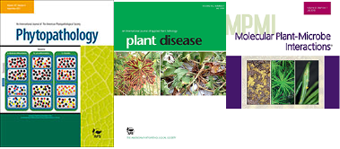

2024
W. H. Belisle, S. Rooney-Latham, M. C. Soriano, et al.“First Report of Phytophthora ramorum Causing Leaf Spots on Cornus capitata (Evergreen Dogwood) in United States”.In: Plant Disease (2024).DOI: https://doi.org/10.1094/PDIS-12-23-2638-PDN.
Z. S. Foster, A. S. Tupper, C. M. Press, et al.“Krisp: A Python package to aid in the design of CRISPR and amplification-based diagnostic assays from whole genome sequencing data”.In: PLOS Computational Biology 20.5 (2024), p. e1012139.DOI: https://doi.org/10.1371/journal.pcbi.1012139.
N. J. Gr√ºnwald, C. H. Bock, J. H. Chang, et al.“Open access and reproducibility in plant pathology research: Guidelines and best practices”.In: Phytopathology¬Æ (2024), pp. PHYTO–12.DOI: https://doi.org/10.1094/PHYTO-12-23-0483-IA.
M. Kozanitas, B. J. Knaus, J. F. Tabima, et al.“Climatic variability, spatial heterogeneity and the presence of multiple hosts drive the population structure of the pathogen Phytophthora ramorum and the epidemiology of Sudden Oak Death”.In: Ecography (2024), p. e07012.DOI: https://doi.org/10.1111/ecog.07012.
M. A. Sudermann, Z. S. Foster, J. H. Chang, et al.“Metabarcoding for plant pathologists”.In: Canadian Journal of Plant Pathology 46.2 (2024), pp. 142–160.DOI: https://doi.org/10.1080/07060661.2023.2290041.
2023
B. A. Kronmiller, N. Feau, D. Shen, et al.“Comparative genomic analysis of 31 phytophthora genomes reveals genome plasticity and horizontal gene transfer”.In: Molecular Plant-Microbe Interactions 36.1 (2023), pp. 26–46.DOI: https://doi.org/10.1094/MPMI-06-22-0133-R.
M. S. Mullett, K. Van Poucke, A. Haegeman, et al.“Phylogeography and population structure of the global, wide host-range hybrid pathogen <i>Phytophthora x cambivora</i>”.In: IMA fungus 14.1 (2023), p. 4.DOI: https://doi.org/10.1186/s43008-023-00109-6.
P. C. Rott, S. Grinstead, S. Dallot, et al.“Genetic Diversity, Evolution, and Diagnosis of Sugarcane Yellow Leaf Virus from 19 Sugarcane-Producing Locations Worldwide”.In: Plant Disease (2023).DOI: https://doi.org/10.1094/PDIS-10-22-2405-RE.
T. Tsykun, B. Mishra, S. Ploch, et al.“High quality genome of the tree pathogen Phytophthora plurivora-a novel resource for epidemiological research”.In: PhytoFrontiers (2023).DOI: https://doi.org/10.1094/PHYTOFR-05-23-0065-A.
2022
N. C. Carleson, C. M. Press, and N. J. Gr√ºnwald.“High-quality, phased genomes of Phytophthora ramorum Clonal Lineages NA1 and EU1”.In: Molecular Plant-Microbe Interactions 35.4 (2022), pp. 360–363.DOI: https://doi.org/10.1094/MPMI-11-21-0264-A.
M. P. Cox, Y. Guo, D. J. Winter, et al.“Chromosome-level assembly of the Phytophthora agathidicida genome reveals adaptation in effector gene families”.In: Frontiers in Microbiology (2022), p. 4304.DOI: https://doi.org/10.3389/fmicb.2022.1038444.
Z. S. Foster, F. E. Albornoz, V. J. Fieland, et al.“A new oomycete metabarcoding method using the rps10 gene”.In: Phytobiomes Journal 6.3 (2022), pp. 214–226.DOI: https://doi.org/10.1094/PBIOMES-02-22-0009-R.
N. Gr√ºnwald, C. Brown, H. S. Ip, et al.“Genetic Processes Facilitating Pathogen Emergence”.In: Tactical Sciences for Biosecurity in Animal and Plant Systems.IGI Global, 2022, pp. 32–53.
R. C. Hamelin, G. J. Bilodeau, R. Heinzelmann, et al.“Genomic biosurveillance detects a sexual hybrid in the sudden oak death pathogen”.In: Communications Biology 5.1 (2022), pp. 1–8.DOI: https://doi.org/10.1038/s42003-022-03394-w.
B. A. Kronmiller, N. Feau, D. Shen, et al.“Comparative genomic analysis of 31 Phytophthora genomes reveal genome plasticity and horizontal gene transfer”.In: Molecular Plant-Microbe Interactions (2022).DOI: https://doi.org/10.1094/MPMI-06-22-0133-R.
J. M. LeBoldus, S. M. Navarro, N. Kline, et al.“Repeated emergence of sudden oak death in Oregon: Chronology, impact, and management”.In: Plant Disease 106.12 (2022), pp. 3013–3021.DOI: https://doi.org/10.1094/PDIS-02-22-0294-FE.
A. Mestas, J. E. Weiland, C. F. Scagel, et al.“Is disease induced by flooding representative of nursery conditions in rhododendrons infected with Phytophthora cinnamomi or P. plurivora?”In: Plant Disease 106.4 (2022), pp. 1157–1166.DOI: https://doi.org/10.1094/PDIS-06-21-1340-RE.
E. K. Peterson, N. J. Gr√ºnwald, and J. L. Parke.“Risk of epidemic development in nurseries from soil inoculum of Phytophthora ramorum”.In: Phytopathology¬Æ 112.5 (2022), pp. 1046–1054.DOI: https://doi.org/10.1094/PHYTO-06-21-0245-R.
E. K. Peterson, K. L. Sondreli, P. Reeser, et al.“First report of the NA2 clonal lineage of the sudden oak death pathogen, Phytophthora ramorum, infecting tanoak in Oregon forests”.In: Plant Disease 106 (2022), p. 2537.DOI: https://doi.org/10.1094/PDIS-10-21-2152-PDN.
J. E. Weiland, C. F. Scagel, N. J. Gr√ºnwald, et al.“Irrigation Frequency and Volume has Little Influence on Phytophthora Root Rot in Container-grown Rhododendron”.In: Journal of Environmental Horticulture 40.2 (2022), pp. 67–78.DOI: https://doi.org/10.24266/2573-5586-40.2.67.
A. J. Weisberg, M. Miller, W. Ream, et al.“Diversification of plasmids in a genus of pathogenic and nitrogen-fixing bacteria”.In: Philosophical Transactions of the Royal Society B 377.1842 (2022), p. 20200466.DOI: https://doi.org/10.1098/rstb.2020.0466.
A. Weisberg, E. Davis II, J. Tabima, et al.“Evolution and epidemiology of global populations of nursery-associated Agrobacterium”.In: Ecological genetics 20 (2022), pp. 26–27.DOI: https://doi.org/10.17816/ecogen112374.
2021
M. Block, B. J. Knaus, M. S. Wiseman, et al.“Development of a diagnostic assay for race differentiation of Podosphaera macularis”.In: Plant Disease 105 (2021), pp. 965-971.URL: https://doi.org/10.1094/PDIS-06-20-1289-RE.
N. C. Carleson, H. A. Daniels, P. W. Reeser, et al.“Novel introductions and epidemic dynamics of the sudden oak death pathogen Phytophthora ramorum in Oregon forests”.In: Phytopathology¬Æ (2021), pp. 731-740.URL: https://doi.org/10.1094/PHYTO-05-20-0164-R.
M. Garbelotto, F. Dovana, D. Schmidt, et al.“First reports of Phytophthora ramorum clonal lineages NA1 and EU1 causing Sudden Oak Death on tanoaks in Del Norte County, California”.In: Plant Disease (2021).DOI: https://doi.org/10.1094/PDIS-12-20-2633-PDN.
N. J. Gr√ºnwald.“Entering the international year of fruits and vegetables: tradeoffs between food production and the environment”.In: CABI Agriculture and Bioscience 2.1 (Jan. 2021), p. 2.ISSN: 2662-4044.DOI: 10.1186/s43170-021-00023-0.URL: https://doi.org/10.1186/s43170-021-00023-0.
N. J. Gr√ºnwald and S. J. Klosterman.“Welcoming PhytoFrontiers into Our APS Family of Journals”.In: PhytoFrontiers 111.1 (2021), pp. 68–77.URL: https://doi.org/10.1094/PHYTOFR-05-20-0001-E.
E. Peterson, N. J. Gr√ºnwald, and J. Parke.“Risk of epidemic development in nurseries from soil inoculum of Phytophthora ramorum”.In: Phytopathology (2021).DOI: 10.1094/PHYTO-06-21-0245-R.
D. A. Rasmussen and N. J. Gr√ºnwald.“Phylogeographic approaches to characterize the emergence of plant pathogens”.In: Phytopathology¬Æ 111.1 (2021), pp. 1-3.URL: https://doi.org/10.1094/PHYTO-07-20-0319-FI.
S. K. Shakya, N. J. Gr√ºnwald, V. J. Fieland, et al.“Phylogeography of the wide-host range panglobal plant pathogen Phytophthora cinnamomi”.In: Molecular Ecology 30.20 (2021), pp. 5164–5178.DOI: 10.1111/mec.16109.
J. F. Tabima, L. Gonen, M. G√≥mez-Gallego, et al.“Molecular phylogenomics and population structure of Phytophthora pluvialis”.In: Phytopathology¬Æ 111.1 (2021), pp. 108–115.URL: https://doi.org/10.1094/PHYTO-06-20-0232-FI.
C. R. Taylor and N. J. Gr√ºnwald.“Growth, infection and aggressiveness of Phytophthora pathogens on Rhododendron leaves”.In: CABI Agriculture and Bioscience 2.1 (2021), pp. 1–15.DOI: https://doi.org/10.1186/s43170-021-00048-5.
J. E. Weiland, C. F. Scagel, N. J. Gr√ºnwald, et al.“Phytophthora Species Differ in Response to Phosphorous Acid and Mefenoxam for the Management of Phytophthora Root Rot in Rhododendron”.In: Plant Disease (2021), pp. PDIS–09.DOI: https://doi.org/10.1094/PDIS-09-20-1960-RE.
A. J. Weisberg, N. J. Gr√ºnwald, E. A. Savory, et al.“Genomic Approaches to Plant-Pathogen Epidemiology and Diagnostics”.In: Annual Review of Phytopathology 59.1 (2021). PMID: 34030448, pp. 311-332.DOI: 10.1146/annurev-phyto-020620-121736.URL: https://doi.org/10.1146/annurev-phyto-020620-121736.
W. A. Weldon, B. J. Knaus, N. J. Gr√ºnwald, et al.“Transcriptome-Derived Amplicon Sequencing Markers Elucidate the US Podosphaera macularis Population Structure Across Feral and Commercial Plantings of Humulus lupulus”.In: Phytopathology¬Æ 111.1 (2021), pp. 194–203.URL: https://doi.org/10.1094/PHYTO-07-20-0299-FI.
2020
T. M. Adams, A. D. Armitage, M. K. Sobczyk, et al.“Genomic investigation of the strawberry pathogen Phytophthora fragariae indicates pathogenicity is associated with transcriptional variation in three key races”.In: Frontiers in Microbiology 11 (2020), p. 490.URL: https://www.frontiersin.org/articles/10.3389/fmicb.2020.00490/full?report=reader.
Y. Diao, M. M. Larsen, Z. N. Kamvar, et al.“Genetic differentiation and clonal expansion of Chinese Botrytis cinerea populations from tomato and other crops in China”.In: Phytopathology 110.2 (2020), pp. 428–439.DOI: https://doi.org/10.1094/PHYTO-09-18-0347-R.
Z. Foster, J. E. Weiland, C. F. Scagel, et al.“The composition of the fungal and oomycete microbiome of Rhododendron roots under varying growth conditions, nurseries, and cultivars”.In: Phytobiomes Journal (2020), pp. PBIOMES–09.URL: https://doi.org/10.1094/PBIOMES-09-19-0052-R.
D. H. Gent, B. J. Claassen, D. Gadoury, et al.“Population Diversity and Structure of Podosphaera macularis in the Pacific Northwestern US and Other Populations”.In: Phytopathology (2020).URL: https://doi.org/10.1094/PHYTO-12-19-0448-R.
N. J. Gr√ºnwald, P. A. Marquet, and A. Robinson.“Launching CABI Agriculture and Bioscience: ensuring that today‚Äôs research meets tomorrow‚Äôs global challenges in agriculture and the environment”.In: CABI Agriculture and Bioscience 1 (2020), pp. 1-3.URL: https://doi.org/10.1186/s43170-020-00005-8.
B. J. Knaus, J. F. Tabima, S. K. Shakya, et al.“Genome-Wide Increased Copy Number is Associated with Emergence of Dominant Clones of the Irish Potato Famine Pathogen Phytophthora infestans”.In: Mbio 11.3 (2020).URL: https://mbio.asm.org/content/11/3/e00326-20.
O. Kozhar, M. M. Larsen, N. J. Gr√ºnwald, et al.“Fungal evolution in anthropogenic environments: Botrytis cinerea populations infecting small fruit hosts in the Pacific Northwest rapidly adapt to human-induced selection pressures”.In: Applied and Environmental Microbiology (2020).URL: https://aem.asm.org/content/early/2020/02/18/AEM.02908-19.abstract.
C. Press, V. Fieland, T. Creswell, et al.“First report of the NA2 clonal lineage of Phytophthora ramorum in Indiana”.In: Plant Disease 104.6 (2020), p. 1875.URL: https://doi.org/10.1094/PDIS-12-19-2543-PDN.
G. Rodr√≠guez-Alvarado, M. D√≠az-Celaya, N. J. Gr√ºnwald, et al.“Phytophthora palmivora causal agent of papaya fruit rot (Carica papaya) in Chiapas, Mexico”.In: Biotecnolog√≠a y Sustentabilidad 5.1 (2020), pp. 37–47.URL: https://revistas.uaz.edu.mx/index.php/biotecnologiaysust/article/download/931/850.
J. E. Weiland, C. F. Scagel, N. Gr√ºnwald, et al.“Soilborne Phytophthora and Pythium diversity from rhododendron in propagation, container, and field production systems of the Pacific Northwest”.In: Plant Disease (2020).URL: https://doi.org/10.1094/PDIS-08-19-1672-RE.
A. J. Weisberg, E. W. Davis, J. Tabima, et al.“Unexpected conservation and global transmission of agrobacterial virulence plasmids”.In: Science 368.6495 (2020).URL: https://science.sciencemag.org/content/368/6495/eaba5256.
2019
N. C. Carleson, V. J. Fieland, C. F. Scagel, et al.“Population structure of Phytophthora plurivora on Rhododendron in Oregon nurseries”.In: Plant disease (2019), pp. PDIS–12.URL: https://doi.org/10.1094/PDIS-12-18-2187-RE.
A. L. Dale, N. Feau, S. E. Everhart, et al.“Mitotic Recombination and Rapid Genome Evolution in the Invasive Forest Pathogen Phytophthora ramorum”.In: mBio 10.2 (2019), pp. e02452–18.URL: https://mbio.asm.org/content/10/2/e02452-18.
J. K. Dung, B. J. Knaus, H. S. Fellows, et al.“Genetic Diversity of Verticillium dahliae Isolates from Mint Detected with Genotyping by Sequencing”.In: Phytopathology (2019).URL: https://doi.org/10.1094/PHYTO-12-18-0475-R.
I. Franic, S. Prospero, M. Hartmann, et al.“Are traded forest tree seeds a potential source of non-native pests?”In: Ecological Applications (2019), p. e01971.URL: https://doi.org/10.1002/eap.1971.
D. H. Gent, N. Adair, B. J. Knaus, et al.“Genotyping-by-Sequencing Reveals Fine-Scale Population Differentiation in Populations of Pseudoperonospora humuli”.In: Phytopathology (2019).URL: https://doi.org/10.1094/PHYTO-12-18-0485-R.
N. J. Gr√ºnwald, J. M. LeBoldus, and R. C. Hamelin.“Ecology and Evolution of the Sudden Oak Death Pathogen Phytophthora ramorum”.In: Annual review of phytopathology 57 (2019).URL: https://doi.org/10.1146/annurev-phyto-082718-100117.
N. Gr√ºnwald, G. Forbes, W. Perez-Barrera, et al.“Phytophthora urerae sp. nov., a new clade 1c relative of the Irish famine pathogen Phytophthora infestans from South America”.In: Plant Pathology 68.3 (2019), pp. 557–565.URL: https://doi.org/10.1111/ppa.12968.
J. Leboldus, S. Keri√∂, H. Daniels, et al.“From genomes to forest management–tackling invasive Phytophthora species in the era of genomics”.In: Canadian Journal of Plant Pathology (2019).URL: https://doi.org/10.1080/07060661.2019.1626910.
F. N. Martin, Y. Zhang, D. E. Cooke, et al.“Insights into evolving global populations of Phytophthora infestans via new complementary mtDNA haplotype markers and nuclear SSRs”.In: PloS one 14.1 (2019), p. e0208606.URL: https://doi.org/10.1371/journal.pone.0208606.
J. F. Tabima and N. J. Gr√ºnwald.“effectR: An expandable R package to predict candidate RxLR and CRN effectors in oomycetes using motif searches”.In: Molecular Plant-Microbe Interactions 0 (2019). PMID: 30951442, p. null.DOI: 10.1094/MPMI-10-18-0279-TA.eprint: https://doi.org/10.1094/MPMI-10-18-0279-TA.URL: https://doi.org/10.1094/MPMI-10-18-0279-TA.
A. S. Taylor, B. J. Knaus, N. J. Gr√ºnwald, et al.“Population genetic structure and cryptic species of Plasmopara viticola in Australia”.In: Phytopathology 109 (2019), pp. 1975-1983.URL: https://doi.org/10.1094/PHYTO-04-19-0146-R.
2018
G. Arsenault-Labrecque, H. Sonah, A. Lebreton, et al.“Stable predictive markers for Phytophthora sojae avirulence genes that impair infection of soybean uncovered by whole genome sequencing of 31 isolates”.In: BMC Biology 16.1 (2018), p. 80.URL: https://doi.org/10.1186/s12915-018-0549-9.
S. R. Bollmann, C. M. Press, B. M. Tyler, et al.“Expansion and Divergence of Argonaute Genes in the Oomycete Genus Phytophthora”.In: Frontiers in Microbiology 9 (2018), p. 2841.ISSN: 1664-302X.DOI: 10.3389/fmicb.2018.02841.URL: https://www.frontiersin.org/article/10.3389/fmicb.2018.02841.
S. Brar, J. Tabima, R. McDougal, et al.“Genetic diversity of Phytophthora pluvialis, a pathogen of conifers, in New Zealand and the west coast of the United States of America”.In: Plant Pathology 67.5 (2018), pp. 1131–1139.DOI: 10.1111/ppa.12812.URL: https://doi.org/10.1111/ppa.12812.
J. H. Chang, M. L. Putnam, N. J. Gr√ºnwald, et al.“Response to comments on: Evolutionary transitions between beneficial and phytopathogenic Rhodococcus challenge disease management”.In: eLife 7 (May. 2018).DOI: 10.7554/elife.35852.URL: https://doi.org/10.7554/eLife.35852.
E. Davis, J. Tabima, A. Weisberg, et al.“Evolution of the U.S. Biological Select Agent Rathayibacter toxicus”.In: mBio 9.4 (2018), pp. e01280-18.DOI: 10.1128/mBio.01280-18.URL: https://mbio.asm.org/content/9/4/e01280-18.
Z. S. L. Foster, S. Chamberlain, and N. J. Gr√ºnwald.“Taxa: An R package implementing data standards and methods for taxonomic data”.In: F1000Research 7 (Mar. 2018), p. 272.DOI: 10.12688/f1000research.14013.1.URL: https://doi.org/10.12688/f1000research.14013.1.
B. J. Knaus and N. J. Gr√ºnwald.“Inferring Variation in Copy Number Using High Throughput Sequencing Data in R”.In: Frontiers in Genetics 9 (Apr. 2018).DOI: 10.3389/fgene.2018.00123.URL: https://www.frontiersin.org/article/10.3389/fgene.2018.00123.
J. M. LeBoldus, K. L. Sondreli, W. Sutton, et al.“First Report of Phytophthora ramorum Lineage EU1 Infecting Douglas Fir and Grand Fir in Oregon”.In: Plant Disease 102 (Nov. 2018), p. 455.DOI: 10.1094/pdis-05-17-0681-pdn.URL: https://doi.org/10.1094/pdis-05-17-0681-pdn.
M. Mideros, D. Turissini, N. Guayazán, et al.“Phytophthora betacei, a new species within Phytophthora clade 1c causing late blight on Solanum betaceum in Colombia”.In: Persoonia 41 (2018), pp. 39–55.URL: https://doi.org/10.3767/persoonia.2018.41.03.
E. A. Savory, S. L. Fuller, A. J. Weisberg, et al.“Correction: Evolutionary transitions between beneficial and phytopathogenic Rhodococcus challenge disease management”.In: eLife 7 (Mar. 2018).DOI: 10.7554/elife.36350.URL: https://doi.org/10.7554/elife.36350.
S. K. Shakya, M. M. Larsen, M. M. Cuenca-Condoy, et al.“Variation in Genetic Diversity of Phytophthora infestans Populations in Mexico from the Center of Origin Outwards”.In: Plant Disease 11 (May. 2018), p. PDIS.DOI: 10.1094/pdis-11-17-1801-re.URL: https://doi.org/10.1094/pdis-11-17-1801-re.
J. F. Tabima, M. D. Coffey, I. A. Zazada, et al.“Populations of Phytophthora rubi Show Little Differentiation and High Rates of Migration Among States in the Western United States”.In: Molecular Plant-Microbe Interactions 31 (Apr. 2018), pp. 614-622.DOI: 10.1094/mpmi-10-17-0258-r.URL: https://doi.org/10.1094/mpmi-10-17-0258-r.
J. E. Weiland, C. R. Scagel, N. J. Gr√ºnwald, et al.“Variation in disease severity caused by Phytophthora cinnamomi, P. plurivora, and Pythium cryptoirregulare on two rhododendron cultivars”.In: Plant Disease (2018).URL: https://doi.org/10.1094/PDIS-04-18-0666-RE.
2017
Z. S. L. Foster, T. J. Sharpton, and N. J. Gr√ºnwald.“Metacoder: An R package for visualization and manipulation of community taxonomic diversity data”.In: PLoS Computational Biology 13.2 (Feb. 2017). Ed. by T. Poisot, p. e1005404.DOI: 10.1371/journal.pcbi.1005404.URL: https://doi.org/10.1371/journal.pcbi.1005404.
M. Gagnon, N. Feau, A. L. Dale, et al.“Development and Validation of Polymorphic Microsatellite Loci for the NA2 Lineage of Phytophthora ramorum from Whole Genome Sequence Data”.In: Plant Disease 101 (Mar. 2017), pp. 666-673.DOI: 10.1094/pdis-11-16-1586-re.URL: https://doi.org/10.1094/pdis-11-16-1586-re.
N. J. Gr√ºnwald, S. E. Everhart, B. J. Knaus, et al.“Best Practices for Population Genetic Analyses”.In: Phytopathology 107 (Jul. 2017), pp. 1000-1010.DOI: 10.1094/phyto-12-16-0425-rvw.URL: https://doi.org/10.1094/phyto-12-16-0425-rvw.
N. J. Gr√ºnwald and E. M. Goss.“Analysis of Population Genetic Data”.In: Exercises in Plant Disease Epidemiology.Ed. by K. L. Stevenson and M. J. Jeger.The American Phytopathological Society, Aug. 2017, pp. 153-163.DOI: 10.1094/9780890544426.020.URL: https://doi.org/10.1094/9780890544426.020.
N. J. Grünwald, J. Tabima, B. Kronmiller, et al.Whole genome sequences of the raspberry and strawberry pathogens Phytophthora rubi and P. fragariae.2017.DOI: 10.1101/115824.URL: http://doi.org/10.1101/115824.
E. A. Savory, S. L. Fuller, A. J. Weisberg, et al.“Evolutionary transitions between beneficial and phytopathogenic Rhodococcus challenge disease management”.In: eLife 6 (Dec. 2017).DOI: 10.7554/elife.30925.URL: https://doi.org/10.7554/elife.30925.
J. F. Tabima, B. A. Kronmiller, C. M. Press, et al.“Whole Genome Sequences of the Raspberry and Strawberry Pathogens Phytophthora rubi and P. fragariae”.In: Molecular Plant-Microbe Interactions 30 (Aug. 2017), pp. 767-769.DOI: 10.1094/mpmi-04-17-0081-a.URL: https://doi.org/10.1094/mpmi-04-17-0081-a.
J. Wang, S. P. Fernandez-Pavia, M. M. Larsen, et al.“High levels of diversity and population structure in the potato late blight pathogen at the Mexico centre of origin”.In: Molecular Ecology (Feb. 2017).DOI: 10.1111/mec.14000.URL: https://doi.org/10.1111/mec.14000.
2016
A. Biasi, F. N. Martin, S. O. Cacciola, et al.“Genetic analysis of Phytophthora nicotianae populations from different hosts using microsatellite markers”.In: Phytopathology 106.9 (2016), pp. 1006-1014.
S. R. Bollmann, Y. Fang, C. M. Press, et al.“Diverse evolutionary trajectories for small RNA biogenesis genes in the oomycete genus Phytophthora”.In: Frontiers in Plant Science 7.MAR2016 (2016).
E. W. Davis, A. J. Weisberg, J. F. Tabima, et al.“Gall-ID: Tools for genotyping gall-causing phytopathogenic bacteria”.In: PeerJ 2016.7 (2016).
Z. S. L. Foster, T. Sharpton, and N. J. Gr√ºnwald.“Metacoder: An R Package for Visualization and Manipulation of Community Taxonomic Diversity Data”.In: bioRxiv (2016).DOI: 10.1101/071019.eprint: https://www.biorxiv.org/content/early/2016/12/07/071019.full.pdf.URL: https://www.biorxiv.org/content/early/2016/12/07/071019.
N. J. Gr√ºnwald, M. M. Larsen, Z. N. Kamvar, et al.“First Report of the EU1 Clonal Lineage ofPhytophthora ramorumon Tanoak in an Oregon Forest”.In: Plant Disease 100.5 (May. 2016), pp. 1024-1024.DOI: 10.1094/pdis-10-15-1169-pdn.URL: https://doi.org/10.1094/pdis-10-15-1169-pdn.
N. J. Gr√ºnwald, B. A. McDonald, and M. G. Milgroom.“Population Genomics of Fungal and Oomycete Pathogens”.In: Annual Review of Phytopathology 54 (2016), pp. 323-346.DOI: 10.1146/annurev-phyto-080614-115913.URL: https://doi.org/10.1146/annurev-phyto-080614-115913.
Z. R. Hansen, B. J. Knaus, J. F. Tabima, et al.“Loop-mediated isothermal amplification for detection of the tomato and potato late blight pathogen, Phytophthora infestans”.In: Journal of Applied Microbiology 120.4 (2016), pp. 1010-1020.
Z. R. Hansen, B. J. Knaus, J. F. Tabima, et al.“SNP-Based Differentiation of Phytophthora infestans Clonal Lineages Using Locked Nucleic Acid Probes and High-Resolution Melt Analysis”.In: Plant Disease 100.7 (Jul. 2016), pp. 1297-1306.DOI: 10.1094/pdis-11-15-1247-re.URL: https://doi.org/10.1094/pdis-11-15-1247-re.
Z. N. Kamvar, M. M. Lopez-Uribe, S. Coughlan, et al.“Developing educational resources for population genetics in r: An open and collaborative approach”.In: Molecular Ecology Resources (2016).
T. Kasuga, M. Bui, E. Bernhardt, et al.“Host-induced aneuploidy and phenotypic diversification in the Sudden Oak Death pathogen Phytophthora ramorum”.In: BMC Genomics 17.1 (2016).
B. J. Knaus and N. J. Gr√ºnwald.“vcfr: A package to manipulate and visualize variant call format data in r”.In: Molecular Ecology Resources (2016).DOI: 10.1111/1755-0998.12549.eprint: https://onlinelibrary.wiley.com/doi/pdf/10.1111/1755-0998.12549.URL: https://onlinelibrary.wiley.com/doi/abs/10.1111/1755-0998.12549.
B. J. Knaus, J. Tabima, C. Davis, et al.“Genomic analyses of dominant US clonal lineages of Phytophthora infestans reveals a shared common ancestry for clonal lineages US11 and US18 and a lack of recently shared ancestry among all other US lineages”.In: Phytopathology (Jun. 2016).DOI: 10.1094/phyto-10-15-0279-r.URL: http://dx.doi.org/10.1094/PHYTO-10-15-0279-R.
J. F. Tabima, S. E. Everhart, M. M. Larsen, et al.“Microbe-ID: An open source toolbox for microbial genotyping and species identification”.In: PeerJ (Apr. 2016).DOI: 10.7287/peerj.preprints.2005v1.URL: https://doi.org/10.7287/peerj.preprints.2005v1.
2015
C. J. Coyne, M. Pilet-Nayel, R. J. McGee, et al.“Identification of QTL controlling high levels of partial resistance to Fusarium solani f. sp. pisi in pea”.In: Plant Breed 134.4 (Jun. 2015). Ed. by W. Link, pp. 446-453.DOI: 10.1111/pbr.12287.URL: http://dx.doi.org/10.1111/pbr.12287.
W. E. Fry, P. R. J. Birch, H. S. Judelson, et al.“Five reasons to consider phytophthora infestans a reemerging pathogen”.In: Phytopathology 105.7 (2015), pp. 966-981.
N. J. Grünwald, Z. N. Kamvar, J. C. Brooks, et al.Supplementary Material For Frontiers Plant Genetics And Genomics 'Novel R Tools For Analysis Of Genome-Wide Population Genetic Data With Emphasis On Clonality'.2015.DOI: 10.5281/zenodo.17424.URL: http://doi.org/10.5281/zenodo.17424.
S. Kamoun, O. Furzer, J. D. G. Jones, et al.“The Top 10 oomycete pathogens in molecular plant pathology”.In: Molecular Plant Pathology 16.4 (2015), pp. 413-434.
Z. N. Kamvar, J. C. Brooks, and N. J. Gr√ºnwald.“Novel R tools for analysis of genome-wide population genetic data with emphasis on clonality”.In: Frontiers in Genetics 6.JUN (2015).
Z. N. Kamvar, M. M. Larsen, A. M. Kanaskie, et al.“Spatial and temporal analysis of populations of the sudden oak death pathogen in Oregon forests”.In: Phytopathology 105.7 (2015), pp. 982-989.
B. J. Knaus, V. J. Fieland, K. A. Graham, et al.“Diversity of Foliar Phytophthora Species on Rhododendronin Oregon Nurseries”.In: Plant Disease 99.10 (Oct. 2015), pp. 1326-1332.DOI: 10.1094/pdis-09-14-0964-re.URL: https://doi.org/10.1094/pdis-09-14-0964-re.
P. W. Reeser, W. Sutton, E. M. Hansen, et al.“First report of phytophthora occultans causing root and collar rot on ceanothus, Boxwood, Rhododendron, and Other Hosts in Horticultural Nurseries in Oregon, USA”.In: Plant Disease 99.9 (2015).
J. E. Weiland, P. Garrido, Z. N. Kamvar, et al.“Population Structure of Pythium irregulare, P. ultimum, and P. sylvaticum in Forest Nursery Soils of Oregon and Washington”.In: Phytopathology 105.5 (May. 2015), pp. 684-694.DOI: 10.1094/phyto-05-14-0147-r.URL: http://dx.doi.org/10.1094/phyto-05-14-0147-r.
S. N. Wolfenbarger, M. C. Twomey, D. M. Gadoury, et al.“Identification and distribution of mating-type idiomorphs in populations of Podosphaera macularis and development of chasmothecia of the fungus”.In: Plant Pathology 64.5 (2015), pp. 1094-1102.
2014
G. Danies, K. Myers, M. F. Mideros, et al.“An Ephemeral Sexual Population of Phytophthora infestans in the Northeastern United States and Canada”.In: PLoS ONE 9.12 (Dec. 2014). Ed. by M. Gijzen, p. e116354.DOI: 10.1371/journal.pone.0116354.URL: http://dx.doi.org/10.1371/journal.pone.0116354.
A. R. Dunn, S. R. Bruening, N. J. Gr√ºnwald, et al.“Evolution of an experimental population of Phytophthora capsici in the field”.In: Phytopathology (Apr. 2014), p. 140404144323003.ISSN: 0031-949X.DOI: 10.1094/phyto-12-13-0346-r.URL: http://dx.doi.org/10.1094/phyto-12-13-0346-r.
S. E. Everhart, J. F. Tabima, and N. J. Gr√ºnwald.“Phytophthora ramorum”.In: Genomics of Plant-Associated Fungi and Oomycetes: Dicot Pathogens (2014), pp. 159-174.
C. A. Eyre, K. J. Hayden, M. Kozanitas, et al.“Lineage, temperature, And host species have interacting effects on lesion development in Phytophthora ramorum”.In: Plant Disease 98.12 (2014), pp. 1717-1727.
M. Gagnon, M. Bergeron, R. C. Hamelin, et al.“Real-time PCR assay to distinguish Phytophthora ramorum lineages using the cellulose binding elicitor lectin (CBEL) locus”.In: Canadian Journal of Plant Pathology 36.3 (2014), pp. 367-376.
E. M. Goss, J. F. Tabima, D. E. L. Cooke, et al.“The Irish potato famine pathogen Phytophthora infestans originated in central Mexico rather than the Andes”.In: Proceedings of the National Academy of Sciences of the United States of America 111.24 (2014), pp. 8791-8796.DOI: 10.1073/pnas.1401884111.URL: http://www.pnas.org/content/111/24/8791.full.
N. J. Grünwald, Z. N. Kamvar, M. M. Larsen, et al.Population Genetic Analysis Of Phytophthora Ramorum Data From Oregon Forests.2014.DOI: 10.5281/zenodo.13008.URL: http://doi.org/10.5281/zenodo.13008.
N. J. Grünwald, Z. N. Kamvar, M. M. Larsen, et al.Sudden\_Oak\_Death\_In\_Oregon\_Forests: Spatial And Temporal Population Dynamics Of The Sudden Oak Death Epidemic In Oregon Forests.2014.DOI: 10.5281/zenodo.13007.URL: http://doi.org/10.5281/zenodo.13007.
N. J. Grünwald, B. J. Knaus, V. J. Fieland, et al.Excel file with PCR-RFLP patterns for identification of nursery Phytophthora spp.2014.DOI: 10.6084/M9.FIGSHARE.1153948.V2.URL: http://doi.org/10.6084/M9.FIGSHARE.1153948.V2.
N. J. Grünwald, B. J. Knaus, V. J. Fieland, et al.Excel file with PCR-RFLP patterns for identification of nursery Phytophthora spp.2014.DOI: 10.6084/M9.FIGSHARE.1153948.V3.URL: http://doi.org/10.6084/M9.FIGSHARE.1153948.V3.
N. J. Grünwald, B. J. Knaus, V. J. Fieland, et al.Excel file with PCR-RFLP patterns for identification of nursery Phytophthora spp.2014.DOI: 10.6084/M9.FIGSHARE.1153948.URL: http://doi.org/10.6084/M9.FIGSHARE.1153948.
Z. N. Kamvar, J. F. Tabima, and N. J. Gr√ºnwald.“Poppr: an R package for genetic analysis of populations with clonal, partially clonal, and/or sexual reproduction”.In: PeerJ 2 (Mar. 2014), p. e281.ISSN: 2167-8359.DOI: 10.7717/peerj.281.URL: http://dx.doi.org/10.7717/peerj.281.
J. Parke, B. J. Knaus, V. J. Fieland, et al.“Phytophthora Community Structure Analyses in Oregon Nurseries Inform Systems Approaches to Disease Management”.In: Phytopathology (Apr. 2014), p. 140404144323003.ISSN: 0031-949X.DOI: 10.1094/phyto-01-14-0014-r.URL: http://dx.doi.org/10.1094/phyto-01-14-0014-r.
L. D. Porter, J. M. Kraft, and N. J. Gr√ºnwald.“Release of Pea Germplasm with Resistance Combined with Desirable Yield and Anti-Lodging Traits”.In: Journal of Plant Registrations 8.2 (2014), p. 191.ISSN: 1936-5209.DOI: 10.3198/jpr2013.07.0041crg.URL: http://dx.doi.org/10.3198/jpr2013.07.0041crg.
S. Restrepo, J. F. Tabima, M. F. Mideros, et al.“Speciation in fungal and oomycete plant pathogens”.In: Annual Review of Phytopathology 52 (2014), pp. 289-316.
A. Saville, K. Graham, N. J. Gr√ºnwald, et al.“Fungicide sensitivity of US genotypes of Phytophthora infestans (Mont.) de Bary to six oomycete-targeted compounds.”In: Plant Disease (Nov. 2014), p. 141120100652001.DOI: 10.1094/pdis-05-14-0452-re.URL: http://dx.doi.org/10.1094/pdis-05-14-0452-re.
C. N. Schoebel, J. Stewart, N. J. Gruenwald, et al.“Population History and Pathways of Spread of the Plant Pathogen Phytophthora plurivora”.In: PLoS ONE 9.1 (Jan. 2014). Ed. by M. Gijzen, p. e85368.ISSN: 1932-6203.DOI: 10.1371/journal.pone.0085368.URL: http://dx.doi.org/10.1371/journal.pone.0085368.
C. N. Schoebel, J. Stewart, N. J. Gr√ºnwald, et al.“Population history and pathways of spread of the plant pathogen Phytophthora plurivora (PLoS ONE (2014) 9, 1 (e85368) DOI: 10.1371/journal.pone. 0085368)”.In: PLoS ONE 9.8 (2014).
J. E. Stewart, D. Kroese, J. F. Tabima, et al.“Pathogenicity, Fungicide Resistance, and Genetic Variability of Phytophthora rubi Isolates from Raspberry ( Rubus idaeus ) in the Western United States”.In: Plant Disease 98.12 (Dec. 2014), pp. 1702-1708.DOI: 10.1094/pdis-11-13-1130-re.URL: http://dx.doi.org/10.1094/pdis-11-13-1130-re.
J. Weiland, L. Santamaria, and N. J. Gr√ºnwald.“Sensitivity of Pythium irregulare, P. sylvaticum, and P. ultimum from forest nurseries to mefenoxam and fosetyl-Al, and control of Pythium damping-off with fungicide and biological treatments”.In: Plant Disease (Feb. 2014), p. 140206115910006.ISSN: 0191-2917.DOI: 10.1094/pdis-09-13-0998-re.URL: http://dx.doi.org/10.1094/pdis-09-13-0998-re.
2013
M. Berbegal, A. Perez-Sierra, J. Armengol, et al.“Evidence for multiple introductions and clonality in Spanish populations of Fusarium circinatum”.In: Phytopathology 103.8 (2013), pp. 851-861.
N. Fahlgren, S. R. Bollmann, K. D. Kasschau, et al.“Phytophthora Have Distinct Endogenous Small RNA Populations That Include Short Interfering and microRNAs”.In: PLoS ONE 8.10 (2013).
W. E. Fry, M. T. McGrath, A. Seaman, et al.“The 2009 late blight pandemic in the eastern United States - Causes and results”.In: Plant Disease 97.3 (2013), pp. 296-306.
E. M. Goss, C. M. Press, and N. J. Gr√ºnwald.“Evolution of RXLR-class effectors in the oomycete plant pathogen Phytophthora ramorum”.In: PLoS ONE 8.11 (2013).DOI: 10.1371/journal.pone.0079347.URL: https://doi.org/10.1371/journal.pone.0079347.
W. Huai, G. Tian, E. M. Hansen, et al.“Identification of Phytophthora species baited and isolated from forest soil and streams in northwestern Yunnan province, China”.In: Forest Pathology 43.2 (2013), pp. 87-103.
B. Park, F. Martin, D. M. Geiser, et al.“Phytophthora Database 2.0: Update and Future Direction”.In: Phytopathology 103.12 (Dec. 2013), pp. 1204-1208.DOI: 10.1094/phyto-01-13-0023-r.URL: http://dx.doi.org/10.1094/phyto-01-13-0023-r.
S. Rooney-Latham, E. Honeycutt, J. Ochoa, et al.“First report of camphor tree (Cinnamomum camphora) as a host of Phytophthora ramorum”.In: Plant Disease 97.10 (2013).
2012
M. Cardenas, J. Tabima, W. E. Fry, et al.“Defining species boundaries in the genus Phytophthora: The case of Phytophthora andina A response to 'Phytophthora andina sp. nov., a newly identified heterothallic pathogen of solanaceous hosts in the Andean highlands' (Oliva et al., 2010)”.In: Plant Pathology 61.2 (2012), pp. 215-220.
D. E. L. Cooke, L. M. Cano, S. Raffaele, et al.“Genome Analyses of an Aggressive and Invasive Lineage of the Irish Potato Famine Pathogen”.In: PLoS Pathogens 8.10 (2012).
N. J. Gr√ºnwald.“Genome sequences of Phytophthora enable translational plant disease management and accelerate research”.In: Canadian Journal of Plant Pathology 34.1 (2012), pp. 13-19.
N. J. Gr√ºnwald.“Novel insights into the emergence of pathogens: the case of chestnut blight”.In: Molecular Ecology 21.16 (Jul. 2012), pp. 3896-3897.DOI: 10.1111/j.1365-294x.2012.05597.x.URL: http://dx.doi.org/10.1111/j.1365-294x.2012.05597.x.
N. J. Gr√ºnwald, M. Garbelotto, E. M. Goss, et al.“Emergence of the sudden oak death pathogen Phytophthora ramorum”.In: Trends in Microbiology 20.3 (2012), pp. 131-138.
N. J. Gr√ºnwald, S. Werres, E. M. Goss, et al.“Phytophthora obscura sp. nov., a new species of the novel Phytophthora subclade 8d”.In: Plant Pathology 61.3 (2012), pp. 610-622.
G. R. Montes, H. L. Saldana, G. M. Aguilera, et al.“Potato yield with regard to late blight (Phytophthora infestans Mont. de Bary) epiphytotics | Rendimiento de papa en funcion de epidemia por tizon tardio (Phytophthora infestans Mont. de Bary)”.In: Revista Fitotecnia Mexicana 35.1 (2012), pp. 69-78.
J. L. Parke and N. J. Gr√ºnwald.“A Systems Approach for Management of Pests and Pathogens of Nursery Crops”.In: Plant Disease 96.9 (Sep. 2012), pp. 1236-1244.DOI: 10.1094/pdis-11-11-0986-fe.URL: http://dx.doi.org/10.1094/pdis-11-11-0986-fe.
2011
M. Cardenas, A. Grajales, R. Sierra, et al.“Genetic diversity of Phytophthora infestans in the Northern Andean region”.In: BMC Genetics 12 (2011).
M. Elliott, G. Sumampong, A. Varga, et al.“Phenotypic differences among three clonal lineages of Phytophthora ramorum”.In: Forest Pathology 41.1 (2011), pp. 7-14.
E. M. Goss, M. E. Cardenas, K. Myers, et al.“The plant pathogen phytophthora andina emerged via hybridization of an unknown phytophthora species and the irish potato famine pathogen, P. infestans”.In: PLoS ONE 6.9 (2011).
E. M. Goss, M. Larsen, A. Vercauteren, et al.“Phytophthora ramorum in Canada: Evidence for Migration Within North America and from Europe”.In: Phytopathology 101.1 (Jan. 2011), pp. 166-171.DOI: 10.1094/phyto-05-10-0133.URL: http://dx.doi.org/10.1094/phyto-05-10-0133.
N. J. Gr√ºnwald and E. M. Goss.“Evolution and population genetics of exotic and re-emerging pathogens: Novel tools and approaches”.In: Annual Review of Phytopathology 49 (2011), pp. 249-267.
N. J. Gr√ºnwald, F. N. Martin, M. M. Larsen, et al.“Phytophthora-ID.org: A Sequence-Based Phytophthora Identification Tool”.In: Plant Disease 95.3 (Mar. 2011), pp. 337-342.DOI: 10.1094/pdis-08-10-0609.URL: http://dx.doi.org/10.1094/pdis-08-10-0609.
M. N. Mitchell, C. M. Ocamb, N. J. Gr√ºnwald, et al.“Genetic and Pathogenic Relatedness of Pseudoperonospora cubensis and P. humuli”.In: Phytopathology 101.7 (Jul. 2011), pp. 805-818.DOI: 10.1094/phyto-10-10-0270.URL: http://dx.doi.org/10.1094/phyto-10-10-0270.
A. Vercauteren, M. Larsen, E. Goss, et al.“Identification of new polymorphic microsatellite markers in the NA1 and NA2 lineages of Phytophthora ramorum”.In: Mycologia 103.6 (2011), pp. 1245-1249.
2010
C. M. Anderson, G. J. Aparicio, A. R. Atangana, et al.“Permanent Genetic Resources added to Molecular Ecology Resources Database 1 December 2009-31 January 2010”.In: Molecular Ecology Resources 10.3 (2010), pp. 576-579.
S. Kang, M. A. Mansfield, B. Park, et al.“The Promise and Pitfalls of Sequence-Based Identification of Plant-Pathogenic Fungi and Oomycetes”.In: Phytopathology 100.8 (Aug. 2010), pp. 732-737.DOI: 10.1094/phyto-100-8-0732.URL: http://dx.doi.org/10.1094/phyto-100-8-0732.
G. Rauscher, I. Simko, H. Mayton, et al.“Quantitative resistance to late blight from Solanum berthaultii cosegregates with RPi-ber: Insights in stability through isolates and environment”.In: Theoretical and Applied Genetics 121.8 (2010), pp. 1553-1567.
A. Vercauteren, I. De Dobbelaere, N. J. Gr√ºnwald, et al.“Clonal expansion of the Belgian Phytophthora ramorum populations based on new microsatellite markers”.In: Molecular Ecology 19.1 (2010), pp. 92-107.
2009
M. Elliott, G. Sumampong, A. Varga, et al.“PCR-RFLP markers identify three lineages of the North American and European populations of Phytophthora ramorum”.In: Forest Pathology 39.4 (2009), pp. 266-278.
E. M. Goss, I. Carbone, and N. J. Gr√ºnwald.“Ancient isolation and independent evolution of the three clonal lineages of the exotic sudden oak death pathogen Phytophthora ramorum”.In: Molecular Ecology 18.6 (2009), pp. 1161-1174.
E. M. Goss, M. Larsen, G. A. Chastagner, et al.“Population genetic analysis infers migration pathways of Phytophthora ramorum in US nurseries”.In: PLoS Pathogens 5.9 (2009).DOI: 10.1371/journal.ppat.1000583.URL: https://doi.org/10.1371/journal.ppat.1000583.
N. J. Gr√ºnwald, E. M. Goss, K. Ivors, et al.“Standardizing the nomenclature for clonal lineages of the sudden oak death pathogen, Phytophthora ramorum”.In: Phytopathology 99.7 (2009), pp. 792-795.
B. J. Haas, S. Kamoun, M. C. Zody, et al.“Genome sequence and analysis of the Irish potato famine pathogen Phytophthora infestans”.In: Nature 461.7262 (2009), pp. 393-398.
D. K. Malvick, N. J. Gr√ºnwald, and A. T. Dyer.“Population structure, races, and host range of Aphanomyces euteiches from alfalfa production fields in the central USA”.In: European Journal of Plant Pathology 123.2 (2009), pp. 171-182.
S. Prospero, N. J. Gr√ºnwald, L. M. Winton, et al.“Migration patterns of the emerging plant pathogen Phytophthora ramorum on the West Coast of the United States of America”.In: Phytopathology 99.6 (2009), pp. 739-749.
G. Romero-Montes, H. Lozoya-Saldana, G. Mora-Aguilera, et al.“Oosporulation of phytophthora infestans favoured by slow, gradual and long epidemics of potato late blight | Formation d'oospores par le phytophthora infestans facilitee par de lentes, graduelles et longues epidemies de la brulure tardive de la pomme de terre”.In: Phytoprotection 90.1 (2009).
2008
C. J. Coyne, L. D. Porter, D. A. Inglis, et al.“Registration of W6 26740, W6 26743, and W6 26745 Green Pea Germplasm Resistant to Fusarium Root Rot”.In: Journal of Plant Registrations 2.2 (2008), p. 137.DOI: 10.3198/jpr2007.12.0674crg.URL: http://dx.doi.org/10.3198/jpr2007.12.0674crg.
A. Dorrance and N. J. Gr√ºnwald.“Phytophthora sojae: Diversity among and within Populations”.In: Oomycete Genetics and Genomics: Diversity, Interactions, and Research Tools (2008), pp. 197-212.
N. J. Gr√ºnwald and E. M. Goss.“Evolution and Genetics of the Invasive Sudden Oak Death Pathogen Phytophthora ramorum”.In: Oomycete Genetics and Genomics: Diversity, Interactions, and Research Tools (2008), pp. 179-196.
N. J. Gr√ºnwald, E. M. Goss, and C. M. Press.“Phytophthora ramorum: A pathogen with a remarkably wide host range causing sudden oak death on oaks and ramorum blight on woody ornamentals”.In: Molecular Plant Pathology 9.6 (2008), pp. 729-740.
N. J. Gr√ºnwald, M. Kitner, V. McDonald, et al.“Susceptibility in Viburnum to Phytophthora ramorum”.In: Plant Disease 92.2 (Feb. 2008), pp. 210-214.DOI: 10.1094/pdis-92-2-0210.URL: http://dx.doi.org/10.1094/pdis-92-2-0210.
L. M. Kohn, M. R. Schaffer, J. B. Anderson, et al.“Marker stability throughout 400 days of in vitro hyphal growth in the filamentous ascomycete, Sclerotinia sclerotiorum”.In: Fungal Genetics and Biology 45.5 (2008), pp. 613-617.
J. Park, B. Park, N. Veeraraghavan, et al.“Phytophthora Database: A Forensic Database Supporting the Identification and Monitoring of Phytophthora”.In: Plant Disease 92.6 (Jun. 2008), pp. 966-972.DOI: 10.1094/pdis-92-6-0966.URL: http://dx.doi.org/10.1094/pdis-92-6-0966.
2007
H. O. Akamatsu, N. J. Gr√ºnwald, M. I. Chilvers, et al.“Development of codominant simple sequence repeat, single nucleotide polymorphism and sequence characterized amplified region markers for the pea root rot pathogen, Aphanomyces euteiches”.In: Journal of Microbiological Methods 71.1 (2007), pp. 82-86.
M. A. Cadena-Hinojosa, M. Diaz-Valasis, R. A. Guzman-Plazola, et al.“Late blight resistance of five mexican potato cultivars in the eastern sierra of the state of Mexico”.In: American Journal of Potato Research 84.5 (Sep. 2007), pp. 385-392.DOI: 10.1007/bf02987184.URL: http://dx.doi.org/10.1007/bf02987184.
G. Malvarez, I. Carbone, N. J. Gr√ºnwald, et al.“New Populations of Sclerotinia sclerotiorum from Lettuce in California and Peas and Lentils in Washington”.In: Phytopathology 97.4 (Apr. 2007), pp. 470-483.DOI: 10.1094/phyto-97-4-0470.URL: http://dx.doi.org/10.1094/phyto-97-4-0470.
S. Prospero, E. M. Hansen, N. J. Gr√ºnwald, et al.“Population dynamics of the sudden oak death pathogen Phytophthora ramorum in Oregon from 2001 to 2004”.In: Molecular Ecology 16.14 (2007), pp. 2958-2973.
G. Romero-Montes, H. Lozoya-Saldana, G. Mora-Aguilera, et al.“Environment and slow epidemics favor oosporulation of phytophthora infestans mont. de bary, on potato leaves in the Toluca Valley, Mexico”.In: American Journal of Potato Research 85.2 (2007), pp. 101-109.
2006
D. P. Garnica, A. M. Pinzon, L. M. Quesada-Ocampo, et al.“Survey and analysis of microsatellites from transcript sequences in Phytophthora species: Frequency, distribution, and potential as markers for the genus”.In: BMC Genomics 7 (2006).
N. J. Gr√ºnwald and G. Hoheisel.“Hierarchical Analysis of Diversity, Selfing, and Genetic Differentiation in Populations of the Oomycete Aphanomyces euteiches”.In: Phytopathology 96.10 (Oct. 2006), pp. 1134-1141.DOI: 10.1094/phyto-96-1134.URL: http://dx.doi.org/10.1094/phyto-96-1134.
N. J. Gr√ºnwald, A. K. Sturbaum, G. R. Montes, et al.“Selection for Fungicide Resistance Within a Growing Season in Field Populations of Phytophthora infestans at the Center of Origin”.In: Phytopathology 96.12 (Dec. 2006), pp. 1397-1403.DOI: 10.1094/phyto-96-1397.URL: http://dx.doi.org/10.1094/phyto-96-1397.
A. Infantino, M. Kharrat, L. Riccioni, et al.“Screening techniques and sources of resistance to root diseases in cool season food legumes”.In: Euphytica 147.1-2 (2006), pp. 201-221.
S. Kang, J. E. Blair, D. M. Geiser, et al.“Plant pathogen culture collections: It takes a village to preserve these resources vital to the advancement of agricultural security and plant pathology”.In: Phytopathology 96.9 (2006), pp. 920-925.
H. Lozoya-Saldana, L. Guzman-Galindo, S. Fernandez-Pavia, et al.“Phytophthora infestans (Mont.) de Bary. I. Host-pathogen specificity and resistance components | Phytophthora infestans (Mont.) de Bary. I. Especificidad hospedero-patogeno y componentes de resistencia”.In: Agrociencia 40.2 (2006), pp. 205-217.
H. Lozoya-Saldana, D. Perales-Rosas, S. P. Fernandez-Pavia, et al.“Characterization of Phytophthora infestans (Mont.) De Bary. II. Subpopulations obtained from wild Solanum species | Caracterizacion de Phytophthora infestans (Mont.) De Bary. II. Subpoblaciones obtenidas de especies silvestres de Solanum”.In: Agrociencia 40.3 (2006), pp. 325-333.
P. N. Miklas, J. Hu, N. J. Gr√ºnwald, et al.“Potential application of TRAP (targeted region amplified polymorphism) markers for mapping and tagging disease resistance traits in common bean”.In: Crop Science 46.2 (2006), pp. 910-916.
B. M. Tyler, S. Tripathy, X. Zhang, et al.“Phytophthora genome sequences uncover evolutionary origins and mechanisms of pathogenesis”.In: Science 313.5791 (2006), pp. 1261-1266.
2005
J. L. Andrade-Piedra, G. A. Forbes, D. Shtienberg, et al.“Qualification of a Plant Disease Simulation Model: Performance of the LATEBLIGHT Model Across a Broad Range of Environments”.In: Phytopathology 95.12 (Dec. 2005), pp. 1412-1422.DOI: 10.1094/phyto-95-1412.URL: http://dx.doi.org/10.1094/phyto-95-1412.
N. J. Gr√ºnwald and W. G. Flier.“The biology of Phytophthora infestans at its center of origin”.In: Annual Review of Phytopathology 43 (2005), pp. 171-190.
G. J. Vandemark and N. J. Gr√ºnwald.“Use of real-time PCR to examine the relationship between disease severity in pea and Aphanomyces euteiches DNA content in roots”.In: European Journal of Plant Pathology 111.4 (2005), pp. 309-316.
2004
S. P. Fernandez-Pavia, N. J. Gr√ºnwald, M. Diaz-Valasis, et al.“Soilborne oospores of Phytophthora infestans in central Mexico survive winter fallow and infect potato plants in the field”.In: Plant Disease 88.1 (2004), pp. 29-33.
K. Sotirovski, I. Papazova-Anakieva, N. J. Gr√ºnwald, et al.“Low diversity of vegetative compatibility types and mating type of Cryphonectria parasitica in the southern Balkans”.In: Plant Pathology 53.3 (2004), pp. 325-333.
2003
W. G. Flier, N. J. Gr√ºnwald, L. P. N. M. Kroon, et al.“The Population Structure of Phytophthora infestans from the Toluca Valley of Central Mexico Suggests Genetic Differentiation Between Populations from Cultivated Potato and Wild Solanum spp.”In: Phytopathology 93.4 (Apr. 2003), pp. 382-390.DOI: 10.1094/phyto.2003.93.4.382.URL: http://dx.doi.org/10.1094/phyto.2003.93.4.382.
W. G. Flier, N. J. Gr√ºnwald, L. P. N. M. Kroon, et al.“The population structure of Phytophthora infestans from the Toluca Valley of central Mexico suggests genetic differentiation between populations from cultivated potato and wild Solanum spp.”In: Phytopathology 93.4 (2003), pp. 382-390.
N. J. Gr√ºnwald, V. A. Coffman, and J. M. Kraft.“Sources of Partial Resistance to Fusarium Root Rot in the Pisum Core Collection”.In: Plant Disease 87.10 (2003), pp. 1197-1200.
N. J. Gr√ºnwald, S. B. Goodwin, M. G. Milgroom, et al.“Analysis of genotypic diversity data for populations of microorganisms”.In: Phytopathology 93.6 (2003), pp. 738-746.
N. J. Gr√ºnwald, S. B. Goodwin, M. G. Milgroom, et al.“Analysis of Genotypic Diversity Data for Populations of Microorganisms”.In: Phytopathology 93.6 (Jun. 2003), pp. 738-746.DOI: 10.1094/PHYTO.2003.93.6.738.URL: http://dx.doi.org/10.1094/PHYTO.2003.93.6.738.
H. Lozoya-Saldana, E. Garay-Serrano, A. Sturbaum-Abud, et al.“Population substructuring of Phytophthora infestans on American potato clones in the Toluca valley, Mexico”.In: Acta Horticulturae 619 (2003), pp. 183-188.
2002
W. G. Flier, N. J. Gr√ºnwald, L. P. Kroon, et al.“Phytophthora ipomoeae sp. nov., a new homothallic species causing leaf blight on Ipomoea longipedunculata in the Toluca Valley of central Mexico”.In: Mycological Research 106.7 (Jul. 2002), pp. 848-856.DOI: 10.1017/s0953756202006123.URL: http://dx.doi.org/10.1017/s0953756202006123.
N. J. Gr√ºnwald, M. A. C. Hinojosa, O. R. Covarrubias, et al.“Potato Cultivars from the Mexican National Program: Sources and Durability of Resistance Against Late Blight”.In: Phytopathology 92.7 (Jul. 2002), pp. 688-693.DOI: 10.1094/phyto.2002.92.7.688.URL: http://dx.doi.org/10.1094/phyto.2002.92.7.688.
N. J. Gr√ºnwald, G. R. Montes, H. L. Saldana, et al.“Potato Late Blight Management in the Toluca Valley: Field Validation of SimCast Modified for Cultivars with High Field Resistance”.In: Plant Disease 86.10 (Oct. 2002), pp. 1163-1168.DOI: 10.1094/pdis.2002.86.10.1163.URL: http://dx.doi.org/10.1094/pdis.2002.86.10.1163.
N. J. Gr√ºnwald, G. Romero Montes, H. Lozoya Saldana, et al.“Potato late blight management in the Toluca valley: Field validation of SimCast modified for cultivars with high field resistance”.In: Plant Disease 86.10 (2002), pp. 1163-1168.
2001
W. G. FLIER, N. J. GR√É?NWALD, W. E. FRY, et al.“Formation, production and viability of oospores of Phytophthora infestans from potato and Solanum demissum in the Toluca Valley, central Mexico”.In: Mycological Research 105.08 (Aug. 2001), pp. 998-1006.DOI: 10.1017/s0953756201004294.URL: http://dx.doi.org/10.1017/s0953756201004294.
W. G. Flier, N. J. Gr√ºnwald, W. E. Fry, et al.“Formation, production and viability of oospores of Phytophthora infestans from potato and Solanum demissum in the Toluca Valley, central Mexico”.In: Mycological Research 105.8 (2001), pp. 998-1006.
N. J. Gr√ºnwald, W. G. Flier, A. K. Sturbaum, et al.“Population Structure of Phytophthora infestans in the Toluca Valley Region of Central Mexico”.In: Phytopathology 91.9 (Sep. 2001), pp. 882-890.DOI: 10.1094/phyto.2001.91.9.882.URL: http://dx.doi.org/10.1094/phyto.2001.91.9.882.
N. J. Gr√ºnwald, W. G. Flier, A. K. Sturbaum, et al.“Population structure of phytophthora infestans in the toluca valley region of central mexico”.In: Phytopathology 91.9 (2001), pp. 882-890.
2000
N. J. Gr√ºnwald, S. Hu, and A. H. C. Van Bruggen.“Short-term cover crop decomposition in organic and conventional soils: Characterization of soil C, N, microbial and plant pathogen dynamics”.In: European Journal of Plant Pathology 106.1 (2000), pp. 37-50.
N. J. Gr√ºnwald, S. Hu, and A. H. C. Van Bruggen.“Short-term cover crop decomposition in organic and conventional soils: Soil microbial and nutrient cycling indicator variables associated with different levels of soil suppressiveness to Pythium aphanidermatum”.In: European Journal of Plant Pathology 106.1 (2000), pp. 51-65.
N. J. Gr√ºnwald, O. A. Rubio-Covarrubias, and W. E. Fry.“Potato late-blight management in the Toluca Valley: Forecasts and resistant cultivars”.In: Plant Disease 84.4 (2000), pp. 410-416.
N. J. Gr√ºnwald, O. A. Rubio-Covarrubias, and W. E. Fry.“Potato Late-Blight Management in the Toluca Valley: Forecasts and Resistant Cultivars”.In: Plant Disease 84.4 (Apr. 2000), pp. 410-416.DOI: 10.1094/pdis.2000.84.4.410.URL: http://dx.doi.org/10.1094/pdis.2000.84.4.410.
K. V. Raman, N. J. Gr√ºnwald, and W. E. Fry.“Promoting international collabortion for potato late blight disease management”.In: Pesticide Outlook 11.5 (2000), pp. 181-185.
1999
S. J. Hu, A. H. C. Van Bruggen, and N. J. Gr√ºnwald.“Dynamics of bacterial populations in relation to carbon availability in a residue-amended soil”.In: Applied Soil Ecology 13.1 (1999), pp. 21-30.
1997
N. Gr√ºnwald.“The Significance and Regulation of Soil Biodiversity: Proceedings of the International Symposium on Soil Biodiversity”.In: Journal of Environment Quality 26.2 (1997), p. 565.DOI: 10.2134/jeq1997.00472425002600020032x.URL: http://dx.doi.org/10.2134/jeq1997.00472425002600020032x.
N. J. Gr√ºnwald, F. Workneh, S. Hu, et al.“Comparison of an in vitro and a damping-off assay to test soils for suppressiveness to Pythium aphanidermatum”.In: European Journal of Plant Pathology 103.1 (1997), pp. 55-63.
S. Hu, N. J. Gr√ºnwald, A. H. C. Van Bruggen, et al.“Short-term effects of cover crop incorporation on soil carbon pools and nitrogen availability”.In: Soil Science Society of America Journal 61.3 (1997), pp. 901-911.
S. Hu, A. H. C. Van Bruggen, R. J. Wakeman, et al.“Microbial suppression of in vitro growth of Pythium ultimum and disease incidence in relation to soil C and N availability”.In: Plant and Soil 195.1 (1997), pp. 43-52.
1996
A. H. C. V. Bruggen, N. J. Gr√ºnwald, and M. Bolda.“Cultural Methods and Soil Nutrient Status in Low and High Input Agricultural Systems, as They Affect Rhizoctonia Species”.In: Rhizoctonia Species: Taxonomy, Molecular Biology, Ecology, Pathology and Disease Control.Ed. by B. Sneh, Jabaji-Hare, S. M. Neate and G. Dijst.Springer, 1996, pp. 407-421.DOI: 10.1007/978-94-017-2901-7_37.URL: http://dx.doi.org/10.1007/978-94-017-2901-7_37.
A. H. C. van Bruggen and N. J. Gr√ºnwald.“Tests for Risk Assessment of Root Infection by Plant Pathogens”.In: Methods for Assessing Soil Quality.Ed. by M. Arshad, B. Lowery, B. Grossman, J. Doran and A. Jones.Soil Science Society of America, 1996.DOI: 10.2136/sssaspecpub49.c17.URL: http://dx.doi.org/10.2136/sssaspecpub49.c17.
1994
A. H. C. van Bruggen and N. J. Gr√ºnwald.“The need for a dual hierarchical approach to study plant disease suppression”.In: Applied Soil Ecology 1.2 (1994), pp. 91-95.